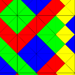

Verschiedenes
Passt in keine der anderen Kategorien...
Kleinstaaterei - ein Zukunftskonzept?
15.04.2023

Als ich vor ein paar Wochen las, dass Wyoming den Verkauf von elektrischen Fahrzeugen verbieten wollte, fühlte ich - der ich in den Grenzen des letzten aufgelösten deutschen Fürstentums wohne - die Kleinstaaterei zurückkehren.
Wie man Eindruck schindet
26.03.2023
Da ich das folgende nur als Screenshot auf Mastodon geehen habe, wollte ich es für mich und die Nachwelt festhalten - und ein bisschen TeX üben. Ich schwöre, das hier kam dabei nicht zum Einsatz!
Sicherheit beim Fernzugang per SSH
12.09.2022

Ich habe vor einiger Zeit bereits zwei Vorträge gestaltet und dafür meine Ideen zur unkomplizierten Erstellung von Präsentationen genutzt - nun ist ein weiterer hinzugekommen.
Präsentationen zu KI / ML und Vertrauen (PKI)
20.07.2022
Ich habe meine eigenen Ideen zur unkomplizierten Erstellung von Präsentationen genutzt, um zwei Vorträge zu gestalten.
Gnuplot Snippets Projekt
28.04.2022
Nachdem ich hin und wieder über verschiede Aspekte von Gnuplot berichtet habe, habe ich mich entschieden, diese über die Jahre gewonnenen Erkenntnisse zu systematisieren und endlich mal davon wegzukommen, immer das letzte Gnuplot Skript zu kopieren und anzupassen.
Generative Art: Mastodon-BitBot
04.12.2021

Ich stieß auf meinen Streifzügen durch meine Bubble neulich wieder auf einen interessanten Bot und einen sehr interessanten Eintrag, den dieser gerade generiert hatte:
In eigener Sache: Erdös-Distanz
15.10.2021
Neulich fand ich eine Webseite, die widerstreitende Gefühle in mir wachrief
Wang Tiling implementiert und optimiert
11.03.2021

Ich habe mich - inspiriert durch Operation Mindfuck beim letztjährigen Chaos-Congress - mit Tilings in der Ebene beschäftigt.
Links - Verschiedenes
03.11.2020

Hier einmal einige Links, die einfach in keine Kategorie passen...
Mathe- und CSS-Videoempfehlungen
18.09.2020

Hier wieder mal zwei Videoempfehlungen zur Weiterbildung...
Ältere Artikel
Hier geht es zum Archiv der Artikel, die vor dem 23.01.2020 verfasst wurden:
- Ticketsysteme sind lebende Wesen
- Irving Finkel
- ...


Vor 5 Jahren hier im Blog
-
Gitlab-CI
29.06.2018
Nachdem ich mein Build-Ökosystem hin zu Gitlab migriert habe, habe ich nun den nächsten Schritt in Angriff genommen: Continuous Integration oder kurz: CI...
Weiterlesen...
Tags
Android Basteln C und C++ Chaos Datenbanken Docker dWb+ ESP Wifi Garten Geo Git(lab|hub) Go GUI Gui Hardware Java Jupyter Komponenten Links Linux Markdown Markup Music Numerik PKI-X.509-CA Python QBrowser Rants Raspi Revisited Security Software-Test sQLshell TeleGrafana Verschiedenes Video Virtualisierung Windows Upcoming...
Manche nennen es Blog, manche Web-Seite - ich schreibe hier hin und wieder über meine Erlebnisse, Rückschläge und Erleuchtungen bei meinen Hobbies.
Wer daran teilhaben und eventuell sogar davon profitieren möchte, muß damit leben, daß ich hin und wieder kleine Ausflüge in Bereiche mache, die nichts mit IT, Administration oder Softwareentwicklung zu tun haben.
Ich wünsche allen Lesern viel Spaß und hin und wieder einen kleinen AHA!-Effekt...
PS: Meine öffentlichen GitHub-Repositories findet man hier - meine öffentlichen GitLab-Repositories finden sich dagegen hier.